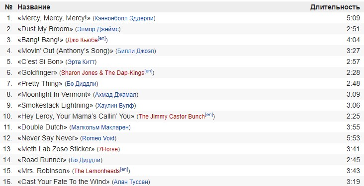

«Волк с Уолл-стрит» (англ. The Wolf of Wall Street) — американская чёрная кинокомедия режиссёра Мартина Скорсезе, основанная на одноимённых мемуарах Джордана Белфорта и вышедшая в мировой прокат 25 декабря 2013 года. Автором сценария выступил Теренс Уинтер. Главную роль исполнил Леонардо Ди Каприо, который выступил и продюсером картины. Данная роль принесла актёру вторую премию «Золотой глобус» в категории «Лучшая мужская роль — комедия или мюзикл». Это пятый совместный проект актёра со Скорсезе[4]. В фильме также снялись Джона Хилл, Марго Робби, Мэттью Макконахи и Жан Дюжарден.Фильм получил пять номинаций на «Оскар», в том числе «за лучший фильм». Также был представлен в четырёх номинациях на премию BAFTA и в двух на «Золотой глобус»; Ди Каприо получил «Золотой глобус» в категории «Лучшая мужская роль — комедия или мюзикл».
В основе фильма лежат одноимённые мемуары Джордана Белфорта, бывшего нью-йоркского брокера. Джордан Белфорт основал одну из крупнейших брокерских контор в 1989 году, но десять лет спустя был осуждён за отмывание денег и ряд прочих финансовых преступлений[5]. Автор справился с алкогольной и наркотической зависимостью, выработанной за время махинаций на Уолл-стрит, написал две книги и теперь читает лекции о том, как достичь успеха. В 2018 году книга Белфорта вышла на русском языке[6].
Повествование фильма начинается в 1987 году. Джордан Белфорт (Леонардо Ди Каприо) становится брокером в успешном инвестиционном банке L.F. Rothschild[en]. Его босс, Марк Ханна (Мэттью Макконахи), советует ему начинать распутный образ жизни, постоянно занимаясь онанизмом, дабы «заставить кровь бегать быстрее», и принимать кокаин. Вскоре банк закрывается после внезапного обвала индекса Доу — Джонса.
По совету жены Терезы (Кристин Милиоти) Джордан устраивается в небольшое заведение, занимающееся мелкими акциями. Его настойчивый стиль общения с клиентами и врождённая харизма быстро дают свои плоды. Он знакомится с соседом по дому Донни (Джона Хилл), торговцем, который сразу находит общий язык с Джорданом и решает открыть с ним собственную фирму. В качестве сотрудников они нанимают нескольких друзей Белфорта, его отца Макса (Роб Райнер) и называют компанию «Стрэттон Оукмонт». Журнал Forbes в своей статье называет Джордана «Волком с Уолл-стрит».
Джордан, как и «завещал» Ханна, в свободное от работы время прожигает жизнь: лавирует от одной вечеринки к другой, вступает в сексуальные отношения с проститутками, употребляет множество наркотических препаратов, в том числе кокаин и кваалюд. Быстрым обогащением Белфорта начинает интересоваться агент ФБР Патрик Дэнем (Кайл Чендлер). На одной из вечеринок Белфорт знакомится с моделью Наоми (Марго Робби), с которой у него вскоре развивается роман, приведший к разводу с женой. Джордан делает Наоми предложение и спустя некоторое время у них рождается дочь Скайлар.
ФБР продолжает расследование, в дело вступает Комиссия по ценным бумагам и биржам. После проведения первичного публичного размещения компании торговца женской обувью Стива Мэддена (Джейк Хоффман[en]) Джордан зарабатывает дополнительные 22 миллиона долларов. Дабы спрятать деньги, Белфорт открывает счёт в швейцарском банке на имя тёти Наоми, Эммы (Джоанна Ламли). Он использует её и своих финансовых партнёров с европейскими паспортами для транспортировки денег в Швейцарию. Афера разоблачается из-за нелепых действий Донни.
Отец Джордана просит сына покинуть пост генерального директора «Стрэттон Оукмонт», видя, что всё закончится для него тюрьмой. Тот решает остаться, будучи удовлетворённым своим текущим образом жизни.
Проходит два года. Дэнем арестовывает Белфорта прямо во время съёмки рекламного ролика. Во Флориде банкир Жан-Жак Саурель (Жан Дюжарден), согласившийся помочь Джордану в его мошенничестве, рассказывает ФБР все подробности дела. Так как доказательств против него огромное количество, Джордан соглашается помочь федеральным агентам в сборе улик на своих бывших коллег. В это же время Наоми, разочарованная положением дел Белфорта и его ничтожным и убогим психофизическим состоянием, сообщает ему, что хочет подать на развод и забрать с собой ребёнка.
На следующее утро Белфорт надевает подслушивающий микрофон, спрятанный под одеждой, и направляется на встречу с Донни. Запиской он предупреждает его, чтобы тот следил за словами — на нём микрофон. После встречи о записке узнаёт Дэнем, помещающий Белфорта под стражу за нарушение их условий, после чего Белфорт принимает условия сделки. ФБР совершает рейд на «Стрэттон Оукмонт».
За сотрудничество с ФБР Белфорту снижают срок и приговаривают к трём годам лишения свободы. После освобождения он занимается семинарами по искусству торговли.
Как сообщил помощник Скорсезе Рэнделл Постер, всего в фильме присутствует около 60 песен. В официальный состав саундтрека вошло всего 16[7]. Приблизительно полный список песен см. здесь. 
Фильм был в целом положительно оценён в мировой кинопрессе, некоторые критики посчитали его лучшим в карьере Скорсезе со времён «Славных парней» (1990)[15][16][17]. На сайте Rotten Tomatoes он имеет рейтинг 77 % на основе 246 рецензий со средней оценкой 7,7 баллов из 10.